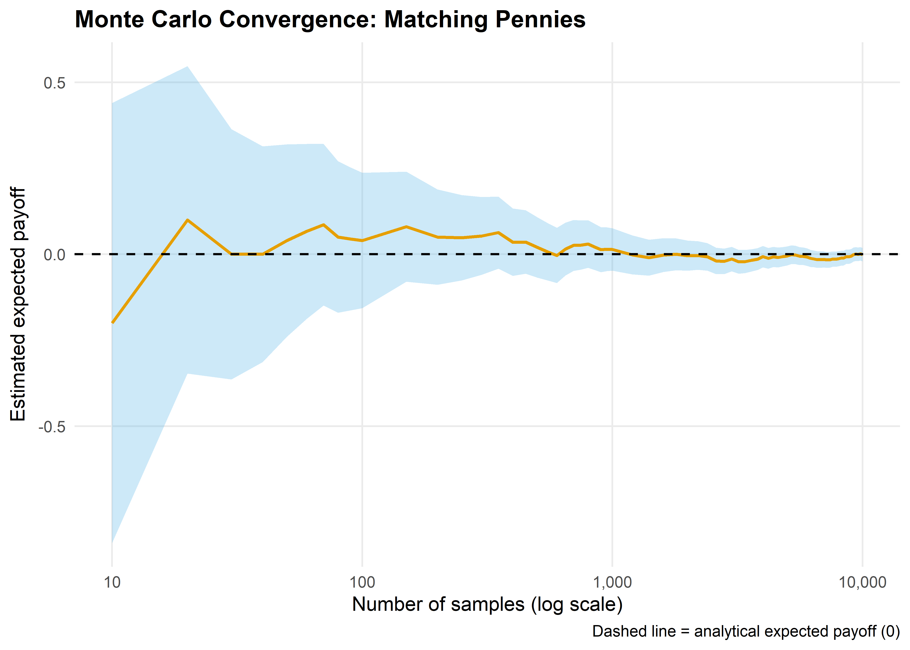
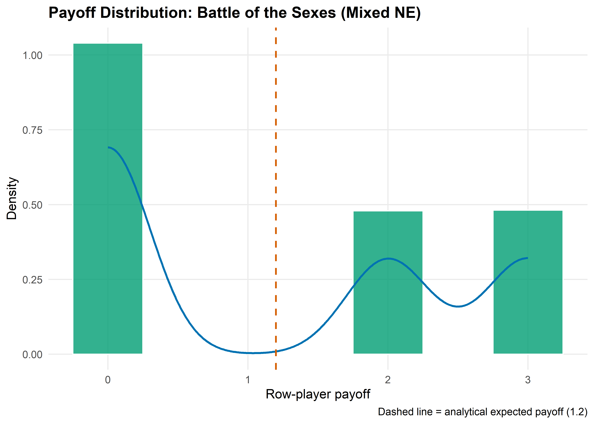

Monte Carlo simulation applied to game theory: estimating mixed-strategy payoffs, evaluating extensive-form strategies by sampling terminal nodes, and constructing bootstrap confidence intervals for expected values.
Keywords
Monte Carlo, simulation, mixed strategy, bootstrap, confidence interval, extensive-form games
18 Monte Carlo Methods for Games
Learning objectives
Explain why Monte Carlo simulation is useful when analytical solutions to games are intractable or tedious.
Implement Monte Carlo estimation of mixed-strategy Nash equilibrium payoffs in R.
Construct bootstrap confidence intervals for expected payoffs.
Demonstrate convergence of Monte Carlo estimates to analytical values and interpret the rate of convergence.
18.1 Motivation
Many games have analytical solutions — we can write down the Nash equilibrium and compute expected payoffs in closed form. But as games grow in complexity, analytical solutions become impractical. Consider poker: even a simplified version has thousands of possible deals, and evaluating a strategy requires averaging over all of them. In extensive-form games with nature moves (chance nodes), the number of terminal nodes can be enormous.
Monte Carlo simulation offers a practical alternative. Instead of exhaustively enumerating every outcome, we sample random plays of the game and average the results. The law of large numbers guarantees that our estimate converges to the true expected value, and the central limit theorem tells us how fast. This chapter develops the Monte Carlo approach for game-theoretic applications, starting with simple matrix games and building to a poker-like card game where exact computation is tedious but simulation is straightforward.
18.2 Theory
18.2.1 Monte Carlo estimation
Let \(X\) be a random variable representing a player’s payoff under some strategy profile. The expected payoff is:
where \(S\) is the set of outcomes, \(p(s)\) is the probability of outcome \(s\), and \(u(s)\) is the associated payoff. The Monte Carlo estimator draws \(n\) independent samples \(X_1, \ldots, X_n\) from the payoff distribution and computes:
By the strong law of large numbers, \(\hat{\mu}_n \to \mathbb{E}[X]\) almost surely as \(n \to \infty\).
18.2.2 Convergence rate and confidence intervals
The standard error of the Monte Carlo estimator is \(\sigma / \sqrt{n}\), where \(\sigma\) is the standard deviation of \(X\). This means the estimation error decreases at rate \(O(1/\sqrt{n})\) — to halve the error, we need four times as many samples.
A \(100(1-\alpha)\%\) confidence interval for \(\mathbb{E}[X]\) is:
where \(\hat{\sigma}_n\) is the sample standard deviation and \(z_{\alpha/2}\) is the standard normal quantile.
Definition
A Monte Carlo estimator for a game’s expected payoff samples independent plays of the game according to the players’ strategies and averages the resulting payoffs. It is an unbiased, consistent estimator whose precision improves at rate \(O(1/\sqrt{n})\).
18.2.3 Bootstrap confidence intervals
When the payoff distribution is non-normal or we want a distribution-free approach, the bootstrap provides an alternative. We resample with replacement from the observed payoffs \(B\) times, compute the mean of each resample, and take quantiles of the bootstrap distribution as confidence bounds. This is especially useful when the analytical variance is hard to derive (Osborne, 2004).
18.3 Implementation in R
18.3.1 Mixed-strategy payoff estimation
We begin with a \(2 \times 2\) game where both players use mixed strategies. Consider Matching Pennies, where the unique Nash equilibrium has both players mixing uniformly over Heads and Tails.
set.seed(42)n_total <-10000payoffs_all <-simulate_payoffs(payoff_row, p_row, p_col, n_total)# Compute running mean and CI at selected sample sizessample_sizes <-c(seq(10, 100, by =10), seq(150, 1000, by =50),seq(1200, 10000, by =200))convergence_df <-map_dfr(sample_sizes, function(n) { x <- payoffs_all[1:n] mu <-mean(x) se <-sd(x) /sqrt(n)tibble(n = n, estimate = mu, ci_lower = mu -1.96* se,ci_upper = mu +1.96* se)})p_convergence <-ggplot(convergence_df, aes(x = n, y = estimate)) +geom_ribbon(aes(ymin = ci_lower, ymax = ci_upper),fill = okabe_ito[2], alpha =0.3) +geom_line(colour = okabe_ito[1], linewidth =0.8) +geom_hline(yintercept = analytical_payoff, linetype ="dashed",colour = okabe_ito[8], linewidth =0.6) +scale_x_log10(labels = scales::comma) +theme_publication() +labs(title ="Monte Carlo Convergence: Matching Pennies",x ="Number of samples (log scale)",y ="Estimated expected payoff",caption ="Dashed line = analytical expected payoff (0)")p_convergencesave_pub_fig(p_convergence, "mc-convergence", width =7, height =5)

Figure 18.1: Convergence of the Monte Carlo payoff estimate to the analytical solution (dashed line at zero) for Matching Pennies under Nash equilibrium play. The shaded ribbon shows the 95% confidence interval, which narrows at rate \(O(1/\sqrt{n})\).
18.3.3 Payoff distribution under mixed strategies
Now consider an asymmetric game where the payoff distribution is more interesting. We use a modified Battle of the Sexes with mixed-strategy equilibrium.
# Battle of the Sexes payoff matrix (row player)payoff_bos <-matrix(c(3, 0, 0, 2), nrow =2, byrow =TRUE,dimnames =list(c("Opera", "Football"),c("Opera", "Football")))# Mixed NE: row plays Opera with prob 2/5, Football with prob 3/5# Col plays Opera with prob 3/5, Football with prob 2/5p_row_bos <-c(Opera =2/5, Football =3/5)p_col_bos <-c(Opera =3/5, Football =2/5)analytical_bos <-sum(outer(p_row_bos, p_col_bos) * payoff_bos)set.seed(42)payoffs_bos <-simulate_payoffs(payoff_bos, p_row_bos, p_col_bos, n_sims =50000)payoff_dist_df <-tibble(payoff = payoffs_bos)p_distribution <-ggplot(payoff_dist_df, aes(x = payoff)) +geom_histogram(aes(y =after_stat(density)), binwidth =0.5,fill = okabe_ito[3], colour ="white", alpha =0.8) +geom_density(colour = okabe_ito[5], linewidth =0.8, bw =0.3) +geom_vline(xintercept = analytical_bos, linetype ="dashed",colour = okabe_ito[6], linewidth =0.7) +theme_publication() +labs(title ="Payoff Distribution: Battle of the Sexes (Mixed NE)",x ="Row-player payoff",y ="Density",caption =glue("Dashed line = analytical expected payoff ({round(analytical_bos, 2)})"))p_distributionsave_pub_fig(p_distribution, "mc-payoff-distribution", width =7, height =5)

Figure 18.2: Distribution of row-player payoffs under mixed-strategy Nash equilibrium play in Battle of the Sexes. The vertical dashed line marks the analytical expected payoff. The distribution is discrete with three mass points corresponding to the three distinct payoff values.
18.4 Worked example
We now apply Monte Carlo estimation to a simplified poker-like game. Two players each receive one card from a deck of integers 1 through 10 (dealt without replacement). Player 1 observes their card and decides to bet or check. If Player 1 checks, payoffs are zero for both. If Player 1 bets, Player 2 (who has also seen their own card) decides to call or fold. If Player 2 folds, Player 1 wins a pot of 1. If Player 2 calls, the higher card wins a pot of 2 (and the loser pays 1).
Player 1’s strategy: bet if card \(\geq k_1\) (threshold strategy with cutoff \(k_1\)). Player 2’s strategy: call if card \(\geq k_2\) (threshold strategy with cutoff \(k_2\)).
play_poker_round <-function(k1, k2, deck_size =10) { cards <-sample(deck_size, 2, replace =FALSE) card1 <- cards[1] card2 <- cards[2]# Player 1 decisionif (card1 < k1) {return(0) # check, no payoff }# Player 1 bets; Player 2 decisionif (card2 < k2) {return(1) # Player 2 folds, Player 1 wins pot of 1 }# Showdownif (card1 > card2) return(2) # Player 1 wins pot of 2if (card1 < card2) return(-1) # Player 1 loses 1return(0) # tie}# Evaluate Player 1's expected payoff for different threshold combinationsset.seed(42)n_sims <-20000threshold_grid <-expand_grid(k1 =1:10, k2 =1:10)results <- threshold_grid |>mutate(payoffs =map2(k1, k2, function(k1, k2) {replicate(n_sims, play_poker_round(k1, k2)) }),mean_payoff =map_dbl(payoffs, mean),se =map_dbl(payoffs, ~sd(.x) /sqrt(length(.x))) )# Find the best threshold for Player 1 (assuming Player 2 plays optimally)# For each k1, find k2 that minimizes Player 1's payoff (Player 2's best response)best_responses <- results |>group_by(k1) |>summarise(min_payoff =min(mean_payoff),best_k2 = k2[which.min(mean_payoff)],.groups ="drop" )optimal_k1 <- best_responses |>filter(min_payoff ==max(min_payoff))cat("Player 1's maximin strategy:\n")
#> Player 1's maximin strategy:
cat(glue(" Bet threshold: k1 >= {optimal_k1$k1}"), "\n")
#> Bet threshold: k1 >= 4
cat(glue(" Player 2 best response: call if k2 >= {optimal_k1$best_k2}"), "\n")
cat(glue(" Point estimate: {round(mean(payoff_samples), 4)}"), "\n")
#> Point estimate: 0.3747
18.4.2 Verifying convergence
We verify that our Monte Carlo estimate stabilizes as the sample size grows:
check_sizes <-c(100, 500, 1000, 5000, 10000, 20000)convergence_check <-map_dfr(check_sizes, function(n) { x <- payoff_samples[1:n]tibble(n = n,estimate =mean(x),se =sd(x) /sqrt(n),ci_width =2*1.96*sd(x) /sqrt(n) )})convergence_check |>mutate(across(c(estimate, se, ci_width), ~round(.x, 4))) |>gt() |>cols_label(n ="Samples", estimate ="Estimate", se ="Std Error",ci_width ="95% CI Width") |>tab_header(title ="Convergence of Monte Carlo Estimate",subtitle ="Simplified poker game under estimated optimal play")
Convergence of Monte Carlo Estimate
Simplified poker game under estimated optimal play
Samples
Estimate
Std Error
95% CI Width
100
0.4500
0.0869
0.3406
500
0.4760
0.0377
0.1478
1000
0.4530
0.0272
0.1065
5000
0.3960
0.0123
0.0484
10000
0.3768
0.0088
0.0344
20000
0.3747
0.0062
0.0242
The table confirms the \(O(1/\sqrt{n})\) convergence: each quadrupling of the sample size roughly halves the confidence interval width, consistent with Equation 18.3.
18.5 Extensions
Variance reduction. Techniques such as antithetic variates, control variates, and importance sampling can dramatically reduce the number of samples needed for a given precision. These are especially valuable in extensive-form games with rare but important outcomes.
Monte Carlo Tree Search (MCTS). The approach used by AlphaGo and other game-playing AI combines Monte Carlo sampling with tree search to evaluate positions in enormous game trees (Sutton & Barto, 2018). MCTS builds on the ideas in this chapter but adds selective exploration of the game tree.
Analytical benchmarks. When an analytical solution exists, it serves as a powerful check on Monte Carlo code. In Chapter 20, we use exact enumeration for small tournaments and Monte Carlo for larger ones.
Connection to replicator dynamics. Monte Carlo methods can estimate the basin of attraction for different equilibria in evolutionary games (Chapter 22) by sampling initial conditions and simulating forward.
For a rigorous treatment of Monte Carlo methods in game theory, see Shoham & Leyton-Brown (2009).
Exercises
Analytical comparison. For the Matching Pennies game in Section 18.3, compute the exact variance of a single payoff draw under Nash equilibrium play. Use this to predict the standard error at \(n = 10{,}000\) samples and compare to the empirical value from the simulation.
Asymmetric poker. Modify the simplified poker game so that the deck has 20 cards and Player 1 must bet at least 2 (paying 2 to enter, winning 3 on a call). Re-run the Monte Carlo estimation to find the new optimal thresholds. How does the larger action cost change Player 1’s optimal strategy?
Importance sampling. In the poker game, most deals result in a check (zero payoff) when \(k_1\) is high. Implement importance sampling that oversamples deals where Player 1 has a high card, reweighting by the likelihood ratio. Compare the variance of the importance-sampling estimator to the naive estimator at \(n = 1{,}000\) samples.
Osborne, M. J. (2004). An introduction to game theory. Oxford University Press.
Shoham, Y., & Leyton-Brown, K. (2009). Multiagent systems: Algorithmic, game-theoretic, and logical foundations. Cambridge University Press.
Sutton, R. S., & Barto, A. G. (2018). Reinforcement learning: An introduction (2nd ed.). MIT Press.
Source Code
---title: "Monte Carlo Methods for Games"short-title: "Monte Carlo Methods"author: "Raban Heller"date-modified: todayabstract: "Monte Carlo simulation applied to game theory: estimating mixed-strategy payoffs, evaluating extensive-form strategies by sampling terminal nodes, and constructing bootstrap confidence intervals for expected values."keywords: ["Monte Carlo", "simulation", "mixed strategy", "bootstrap", "confidence interval", "extensive-form games"]other-links: - text: Download Chapter PDF href: ../downloads/monte-carlo-methods-for-games.pdf icon: file-pdf---# Monte Carlo Methods for Games {#sec-monte-carlo}```{r}#| label: setup#| include: falsesource(here::here("R", "_common.R"))```## Learning objectives {.unnumbered}- Explain why Monte Carlo simulation is useful when analytical solutions to games are intractable or tedious.- Implement Monte Carlo estimation of mixed-strategy Nash equilibrium payoffs in R.- Construct bootstrap confidence intervals for expected payoffs.- Demonstrate convergence of Monte Carlo estimates to analytical values and interpret the rate of convergence.## MotivationMany games have analytical solutions — we can write down the Nash equilibrium and compute expected payoffs in closed form. But as games grow in complexity, analytical solutions become impractical. Consider poker: even a simplified version has thousands of possible deals, and evaluating a strategy requires averaging over all of them. In extensive-form games with nature moves (chance nodes), the number of terminal nodes can be enormous.Monte Carlo simulation offers a practical alternative. Instead of exhaustively enumerating every outcome, we sample random plays of the game and average the results. The law of large numbers guarantees that our estimate converges to the true expected value, and the central limit theorem tells us how fast. This chapter develops the Monte Carlo approach for game-theoretic applications, starting with simple matrix games and building to a poker-like card game where exact computation is tedious but simulation is straightforward.## Theory### Monte Carlo estimationLet $X$ be a random variable representing a player's payoff under some strategy profile. The expected payoff is:$$\mathbb{E}[X] = \sum_{s \in S} p(s) \cdot u(s)$$ {#eq-expected-payoff}where $S$ is the set of outcomes, $p(s)$ is the probability of outcome $s$, and $u(s)$ is the associated payoff. The Monte Carlo estimator draws $n$ independent samples $X_1, \ldots, X_n$ from the payoff distribution and computes:$$\hat{\mu}_n = \frac{1}{n} \sum_{i=1}^{n} X_i$$ {#eq-mc-estimator}By the strong law of large numbers, $\hat{\mu}_n \to \mathbb{E}[X]$ almost surely as $n \to \infty$.### Convergence rate and confidence intervalsThe standard error of the Monte Carlo estimator is $\sigma / \sqrt{n}$, where $\sigma$ is the standard deviation of $X$. This means the estimation error decreases at rate $O(1/\sqrt{n})$ — to halve the error, we need four times as many samples.A $100(1-\alpha)\%$ confidence interval for $\mathbb{E}[X]$ is:$$\hat{\mu}_n \pm z_{\alpha/2} \cdot \frac{\hat{\sigma}_n}{\sqrt{n}}$$ {#eq-ci}where $\hat{\sigma}_n$ is the sample standard deviation and $z_{\alpha/2}$ is the standard normal quantile.::: {.callout-note}## DefinitionA **Monte Carlo estimator** for a game's expected payoff samples independent plays of the game according to the players' strategies and averages the resulting payoffs. It is an unbiased, consistent estimator whose precision improves at rate $O(1/\sqrt{n})$.:::### Bootstrap confidence intervalsWhen the payoff distribution is non-normal or we want a distribution-free approach, the **bootstrap** provides an alternative. We resample with replacement from the observed payoffs $B$ times, compute the mean of each resample, and take quantiles of the bootstrap distribution as confidence bounds. This is especially useful when the analytical variance is hard to derive [@osborne2004].## Implementation in R {#sec-mc-implementation}### Mixed-strategy payoff estimationWe begin with a $2 \times 2$ game where both players use mixed strategies. Consider Matching Pennies, where the unique Nash equilibrium has both players mixing uniformly over Heads and Tails.```{r}#| label: matching-pennies-setup# Matching Pennies payoff matrix (row player)# Row = Heads/Tails, Col = Heads/Tailspayoff_row <-matrix(c(1, -1, -1, 1), nrow =2, byrow =TRUE,dimnames =list(c("H", "T"), c("H", "T")))# Nash equilibrium: both players mix 50-50p_row <-c(H =0.5, T =0.5)p_col <-c(H =0.5, T =0.5)# Analytical expected payoff under NEanalytical_payoff <-sum(outer(p_row, p_col) * payoff_row)cat(glue("Analytical expected payoff (row player): {analytical_payoff}"), "\n")``````{r}#| label: mc-estimation# Monte Carlo estimation of the expected payoffsimulate_payoffs <-function(payoff_matrix, p_row, p_col, n_sims) { row_actions <-sample(rownames(payoff_matrix), n_sims, replace =TRUE,prob = p_row) col_actions <-sample(colnames(payoff_matrix), n_sims, replace =TRUE,prob = p_col) payoffs <-mapply(function(r, c) payoff_matrix[r, c], row_actions, col_actions) payoffs}set.seed(42)payoffs_10k <-simulate_payoffs(payoff_row, p_row, p_col, n_sims =10000)cat(glue("MC estimate (10,000 samples): {round(mean(payoffs_10k), 4)}"), "\n")cat(glue("MC std error: {round(sd(payoffs_10k) / sqrt(length(payoffs_10k)), 4)}"), "\n")```### Convergence plot```{r}#| label: fig-mc-convergence#| fig-cap: "Convergence of the Monte Carlo payoff estimate to the analytical solution (dashed line at zero) for Matching Pennies under Nash equilibrium play. The shaded ribbon shows the 95% confidence interval, which narrows at rate $O(1/\\sqrt{n})$."#| fig-width: 7#| fig-height: 5set.seed(42)n_total <-10000payoffs_all <-simulate_payoffs(payoff_row, p_row, p_col, n_total)# Compute running mean and CI at selected sample sizessample_sizes <-c(seq(10, 100, by =10), seq(150, 1000, by =50),seq(1200, 10000, by =200))convergence_df <-map_dfr(sample_sizes, function(n) { x <- payoffs_all[1:n] mu <-mean(x) se <-sd(x) /sqrt(n)tibble(n = n, estimate = mu, ci_lower = mu -1.96* se,ci_upper = mu +1.96* se)})p_convergence <-ggplot(convergence_df, aes(x = n, y = estimate)) +geom_ribbon(aes(ymin = ci_lower, ymax = ci_upper),fill = okabe_ito[2], alpha =0.3) +geom_line(colour = okabe_ito[1], linewidth =0.8) +geom_hline(yintercept = analytical_payoff, linetype ="dashed",colour = okabe_ito[8], linewidth =0.6) +scale_x_log10(labels = scales::comma) +theme_publication() +labs(title ="Monte Carlo Convergence: Matching Pennies",x ="Number of samples (log scale)",y ="Estimated expected payoff",caption ="Dashed line = analytical expected payoff (0)")p_convergencesave_pub_fig(p_convergence, "mc-convergence", width =7, height =5)```### Payoff distribution under mixed strategiesNow consider an asymmetric game where the payoff distribution is more interesting. We use a modified Battle of the Sexes with mixed-strategy equilibrium.```{r}#| label: fig-mc-payoff-distribution#| fig-cap: "Distribution of row-player payoffs under mixed-strategy Nash equilibrium play in Battle of the Sexes. The vertical dashed line marks the analytical expected payoff. The distribution is discrete with three mass points corresponding to the three distinct payoff values."#| fig-width: 7#| fig-height: 5# Battle of the Sexes payoff matrix (row player)payoff_bos <-matrix(c(3, 0, 0, 2), nrow =2, byrow =TRUE,dimnames =list(c("Opera", "Football"),c("Opera", "Football")))# Mixed NE: row plays Opera with prob 2/5, Football with prob 3/5# Col plays Opera with prob 3/5, Football with prob 2/5p_row_bos <-c(Opera =2/5, Football =3/5)p_col_bos <-c(Opera =3/5, Football =2/5)analytical_bos <-sum(outer(p_row_bos, p_col_bos) * payoff_bos)set.seed(42)payoffs_bos <-simulate_payoffs(payoff_bos, p_row_bos, p_col_bos, n_sims =50000)payoff_dist_df <-tibble(payoff = payoffs_bos)p_distribution <-ggplot(payoff_dist_df, aes(x = payoff)) +geom_histogram(aes(y =after_stat(density)), binwidth =0.5,fill = okabe_ito[3], colour ="white", alpha =0.8) +geom_density(colour = okabe_ito[5], linewidth =0.8, bw =0.3) +geom_vline(xintercept = analytical_bos, linetype ="dashed",colour = okabe_ito[6], linewidth =0.7) +theme_publication() +labs(title ="Payoff Distribution: Battle of the Sexes (Mixed NE)",x ="Row-player payoff",y ="Density",caption =glue("Dashed line = analytical expected payoff ({round(analytical_bos, 2)})"))p_distributionsave_pub_fig(p_distribution, "mc-payoff-distribution", width =7, height =5)```## Worked exampleWe now apply Monte Carlo estimation to a simplified poker-like game. Two players each receive one card from a deck of integers 1 through 10 (dealt without replacement). Player 1 observes their card and decides to **bet** or **check**. If Player 1 checks, payoffs are zero for both. If Player 1 bets, Player 2 (who has also seen their own card) decides to **call** or **fold**. If Player 2 folds, Player 1 wins a pot of 1. If Player 2 calls, the higher card wins a pot of 2 (and the loser pays 1).Player 1's strategy: bet if card $\geq k_1$ (threshold strategy with cutoff $k_1$).Player 2's strategy: call if card $\geq k_2$ (threshold strategy with cutoff $k_2$).```{r}#| label: poker-simulationplay_poker_round <-function(k1, k2, deck_size =10) { cards <-sample(deck_size, 2, replace =FALSE) card1 <- cards[1] card2 <- cards[2]# Player 1 decisionif (card1 < k1) {return(0) # check, no payoff }# Player 1 bets; Player 2 decisionif (card2 < k2) {return(1) # Player 2 folds, Player 1 wins pot of 1 }# Showdownif (card1 > card2) return(2) # Player 1 wins pot of 2if (card1 < card2) return(-1) # Player 1 loses 1return(0) # tie}# Evaluate Player 1's expected payoff for different threshold combinationsset.seed(42)n_sims <-20000threshold_grid <-expand_grid(k1 =1:10, k2 =1:10)results <- threshold_grid |>mutate(payoffs =map2(k1, k2, function(k1, k2) {replicate(n_sims, play_poker_round(k1, k2)) }),mean_payoff =map_dbl(payoffs, mean),se =map_dbl(payoffs, ~sd(.x) /sqrt(length(.x))) )# Find the best threshold for Player 1 (assuming Player 2 plays optimally)# For each k1, find k2 that minimizes Player 1's payoff (Player 2's best response)best_responses <- results |>group_by(k1) |>summarise(min_payoff =min(mean_payoff),best_k2 = k2[which.min(mean_payoff)],.groups ="drop" )optimal_k1 <- best_responses |>filter(min_payoff ==max(min_payoff))cat("Player 1's maximin strategy:\n")cat(glue(" Bet threshold: k1 >= {optimal_k1$k1}"), "\n")cat(glue(" Player 2 best response: call if k2 >= {optimal_k1$best_k2}"), "\n")cat(glue(" Expected payoff: {round(optimal_k1$min_payoff, 4)}"), "\n")```### Bootstrap confidence intervalWe use the bootstrap to construct a confidence interval for Player 1's expected payoff under the estimated optimal strategies.```{r}#| label: bootstrap-ciset.seed(42)k1_star <- optimal_k1$k1[1]k2_star <- optimal_k1$best_k2[1]# Generate payoff samples under optimal playpayoff_samples <-replicate(20000, play_poker_round(k1_star, k2_star))# BootstrapB <-5000boot_means <-replicate(B, { resample <-sample(payoff_samples, replace =TRUE)mean(resample)})ci_boot <-quantile(boot_means, c(0.025, 0.975))cat("Bootstrap 95% CI for Player 1's expected payoff:\n")cat(glue(" [{round(ci_boot[1], 4)}, {round(ci_boot[2], 4)}]"), "\n")cat(glue(" Point estimate: {round(mean(payoff_samples), 4)}"), "\n")```### Verifying convergenceWe verify that our Monte Carlo estimate stabilizes as the sample size grows:```{r}#| label: poker-convergencecheck_sizes <-c(100, 500, 1000, 5000, 10000, 20000)convergence_check <-map_dfr(check_sizes, function(n) { x <- payoff_samples[1:n]tibble(n = n,estimate =mean(x),se =sd(x) /sqrt(n),ci_width =2*1.96*sd(x) /sqrt(n) )})convergence_check |>mutate(across(c(estimate, se, ci_width), ~round(.x, 4))) |>gt() |>cols_label(n ="Samples", estimate ="Estimate", se ="Std Error",ci_width ="95% CI Width") |>tab_header(title ="Convergence of Monte Carlo Estimate",subtitle ="Simplified poker game under estimated optimal play")```The table confirms the $O(1/\sqrt{n})$ convergence: each quadrupling of the sample size roughly halves the confidence interval width, consistent with @eq-ci.## Extensions- **Variance reduction.** Techniques such as antithetic variates, control variates, and importance sampling can dramatically reduce the number of samples needed for a given precision. These are especially valuable in extensive-form games with rare but important outcomes.- **Monte Carlo Tree Search (MCTS).** The approach used by AlphaGo and other game-playing AI combines Monte Carlo sampling with tree search to evaluate positions in enormous game trees [@sutton2018]. MCTS builds on the ideas in this chapter but adds selective exploration of the game tree.- **Analytical benchmarks.** When an analytical solution exists, it serves as a powerful check on Monte Carlo code. In @sec-axelrod-tournament, we use exact enumeration for small tournaments and Monte Carlo for larger ones.- **Connection to replicator dynamics.** Monte Carlo methods can estimate the basin of attraction for different equilibria in evolutionary games (@sec-replicator-dynamics) by sampling initial conditions and simulating forward.- For a rigorous treatment of Monte Carlo methods in game theory, see @shoham2009.## Exercises {.unnumbered}1. **Analytical comparison.** For the Matching Pennies game in @sec-mc-implementation, compute the exact variance of a single payoff draw under Nash equilibrium play. Use this to predict the standard error at $n = 10{,}000$ samples and compare to the empirical value from the simulation.2. **Asymmetric poker.** Modify the simplified poker game so that the deck has 20 cards and Player 1 must bet at least 2 (paying 2 to enter, winning 3 on a call). Re-run the Monte Carlo estimation to find the new optimal thresholds. How does the larger action cost change Player 1's optimal strategy?3. **Importance sampling.** In the poker game, most deals result in a check (zero payoff) when $k_1$ is high. Implement importance sampling that oversamples deals where Player 1 has a high card, reweighting by the likelihood ratio. Compare the variance of the importance-sampling estimator to the naive estimator at $n = 1{,}000$ samples.Solutions appear in @sec-solutions.